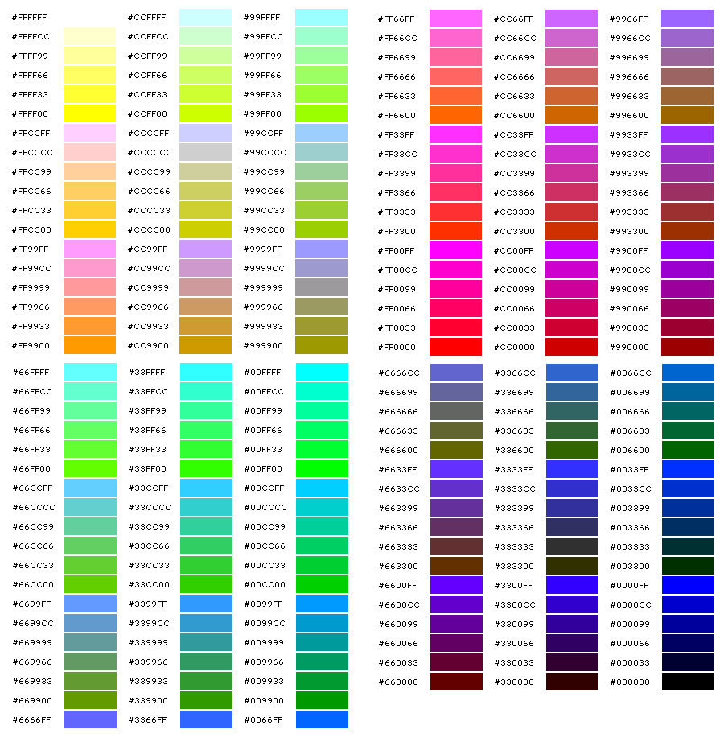

Безопасные цвета всегда неизменны при переходе от одного браузера к другому, от одного монитора к другому, или от одной платформы к другой,
с их различными разрешениями и возможностями цветопередачи.
Если веб-браузер не в состоянии правильно отобразить тот или иной цвет, то он пытается подобрать похожий или смешивает несколько соседних цветов.
Может так случиться, что исходный цвет будет замещён чем-то совершенно неподходящим.
Сегодня уже весьма спорна целесообразность использования безопасной палитры, однако используя её, вы будете уверены, что цвета будут выглядеть неизменно хорошо
и без искажений даже на очень старых компьютерах, вплоть до 8-битного режима отображения с поддержкой всего 256 цветов.
Палитра состоит из 32 сочетаний 6 оттенков красного, зеленого и синего. Эти градации - 00, 33, 66, 99, CC, FF.
